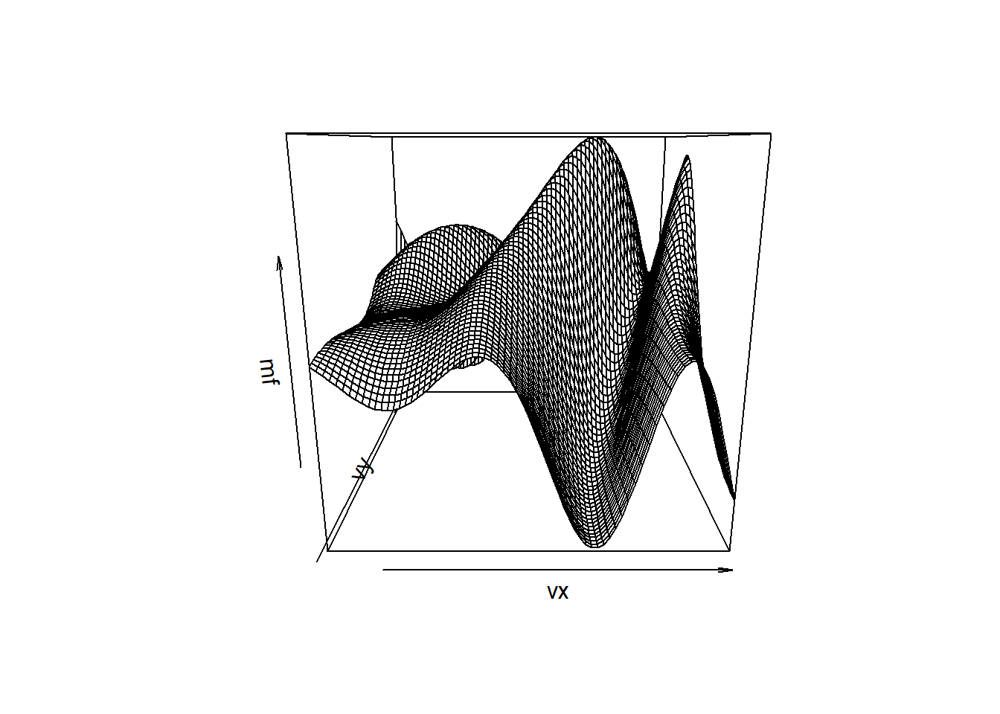
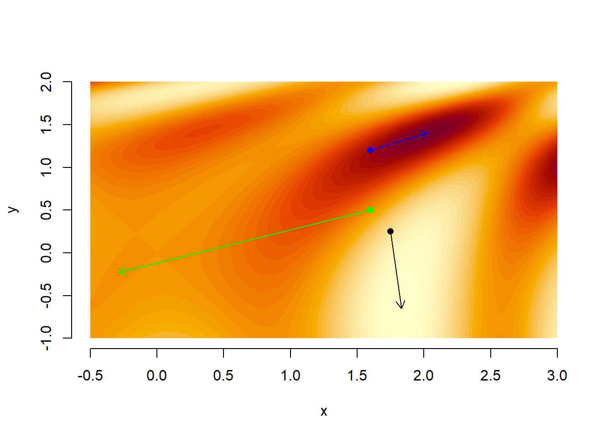

ascent <- function(f, grad.f, vX0, dTol = 1e-9, n.max = 100) {
vX.old <- vX0
vX <- line.search(f, vX0, grad.f(vX0))
n <- 1
while ((f(vX) - f(vX.old) > dTol) & (n < n.max)) {
vX.old <- vX
vX <- line.search(f, vX, grad.f(vX))
cat("at iteration", n, "the coordinates of x are", vX, "\n")
n <- n + 1
}
return(vX)
}9 Numerical Optimization 2
9.1 Multivariate Optimization
We now turn to the more useful but more difficult problem of finding local minima or maxima of a function of several variables, i.e., multivariate optimization.
Let \(f : \mathbb{R}^d \rightarrow \mathbb{R}\) and suppose that all of the first- and second-order partial derivatives of \(f\) exist and are continuous everywhere.
Denote the i-th partial derivative at \(\mathbf{x}=(x_1,...,x_d)^\intercal\) as \(f_i(\mathbf{x})=\frac{\partial f(\mathbf{x})}{\partial x_i}\) and define the gradient:
\[ \nabla f(\mathbf{x}) = (f_1(\mathbf{x}), f_2(\mathbf{x}), \dots, f_d(\mathbf{x}))^{\top}, \]
And the Hessian:
\[ \mathbf{H}(\mathbf{x}) = \begin{pmatrix} \frac{\partial^2 f(\mathbf{x})}{\partial x_1 \partial x_1} & \cdots & \frac{\partial^2 f(\mathbf{x})}{\partial x_1 \partial x_d} \\ \vdots & \ddots & \vdots \\ \frac{\partial^2 f(\mathbf{x})}{\partial x_d \partial x_1} & \cdots & \frac{\partial^2 f(\mathbf{x})}{\partial x_d \partial x_d} \end{pmatrix} \]
A necessary (but not sufficient) condition for a local maximum at \(\mathbf{x}\) is \(\nabla f(\mathbf{x})=\mathbf{0}\) and the Hessian is negative semi-definite.
A sufficient (but not necessary) condition for a local maximum at \(\mathbf{x}\) is \(\nabla f(\mathbf{x})=\mathbf{0}\) and the Hessian is negative definite.
As in one dimension, we will use iterative local search techniques to find local maxima.
Define \(||\mathbf{x}||_\infty = \max_i{|x_i|}\), In higher dimensions, we use stopping conditions that are combinations of the following:
\(\|\mathbf{x}_n - \mathbf{x}_{n-1}\|_{\infty} \leq \varepsilon;\)
\(|f(\mathbf{x}_n) - f(\mathbf{x}_{n-1})| \leq \varepsilon;\)
\(\|\nabla f(\mathbf{x}_n)\|_{\infty} \leq \varepsilon;\)
And to guard against non-convergence, we also specify a maximum number of iterations \(n_{max}\), then stop when \(n=n_{max}\).
9.2 Steepest ascent method
Let \(f : \mathbb{R}^d \rightarrow \mathbb{R}\) be a function with continuous partial derivatives everywhere. We wish to find a local maximum of \(f\) in the neighborhood of some point \(x_0\).
In the steepest ascent method, we seek a local maximum by moving in the direction of the gradient, which is the direction with the largest slope, i.e., the steepest ascent. (The direction with the smallest slope at the point \(\mathbf{x}\) is \(- \nabla f(\mathbf{x})\), which you use if you are searching for a local minimum).
Thus, the steepest ascent method has the form:
\[ \mathbf{x}_{n+1} = \mathbf{x}_n + \alpha \nabla f(\mathbf{x}_n) \]
With some \(\alpha \ge 0\) being the step size while \(\nabla f(\mathbf{x}_n)\) is the direction of the step.
Given this form, we choose \(\alpha \ge 0\) to maximize.
\[ g(\alpha) = f(\mathbf{x}_n + \alpha \nabla f(\mathbf{x}_n)) = f(\mathbf{x}_{n+1}). \]
Unless we’re already at a local maximum, we will always choose \(\alpha > 0\) with \(f(\mathbf{x}_{n+1}) > f(\mathbf{x}_n)\).
If \(f\) is bounded from above then, because \(f(\mathbf{x}_{n+1}) \ge f(\mathbf{x}_n)\), the sequence \(\{f(\mathbf{x}_n)\}_{n=1}^{\infty}\) must converge, which suggests that we can use the stopping condition \(f(\mathbf{x}_{n+1}) - f(\mathbf{x}_n) \le \varepsilon\) for some small tolerance \(\varepsilon > 0\).
Define the function line.search that takes arguments \(f\), \(\mathbf{x}_n\), and \(\nabla f(\mathbf{x}_n)\) and returns \(\mathbf{x}_n + \alpha^* \nabla f(\mathbf{x}_n)\), where \(\alpha^*\) is the value that maximizes \(g(\alpha)\)), we can sketch the implementation of the steepest ascent method.
9.2.1 Steepest ascent method: Implementation in R
9.2.2 Line search
To complete the steepest ascent algorithm, at each step \(n\), given the optimal direction \(\mathbf{\nabla} f(\mathbf{x}_n)\), we need to find the optimal step size, \(\alpha^*\), that is, we need to maximize \(g(\alpha) = f(\mathbf{x}_n + \alpha \mathbf{\nabla} f(\mathbf{x}_n))\) over \(\alpha > 0\).
Hence, we need to find
\[\alpha^* = \underset{\alpha}{\operatorname{arg max}} f(\mathbf{x}_n + \alpha \mathbf{\nabla} f(\mathbf{x}_n)).\]
As we know, it is very hard to find a global maximum, so we will instead look for a local maximum, for which we will use the golden-section algorithm.
The golden-section method requires three initial points \(\alpha_l < \alpha_m < \alpha_r\) such that \(g(\alpha_m) \ge g(\alpha_l)\) and \(g(\alpha_m) \ge g(\alpha_r)\).
Put \(\alpha_l = 0\). Theoretically, if \(||\nabla f(\mathbf{x}_n)|| > 0\) then \(g'(0) > 0\) and there must exist some \(\varepsilon > 0\) such that \(g(\varepsilon) > g(0)\), so we can put \(\alpha_m = \varepsilon\).
In practice, however, if \(g'(0)\) is very small, it might not be possible to numerically distinguish \(g(0)\) from \(g(\varepsilon)\), and in that case we set \(\alpha^* = 0\).
There is no theoretical guarantee that a suitable \(\alpha_r\) exists, because we might have \(g\) increasing over the whole interval \([0, \infty)\). To deal with this problem, we specify a maximum step size, \(\alpha_{max}\), such that if we cannot find \(\alpha_r \le \alpha_{max}\) such that \(g(\alpha_m) \ge g(\alpha_r)\), we set \(\alpha^* = \alpha_{max}\).
9.2.3 Line-search: Implementation in R
line.search <- function(f, vX, vG, dTol = 1e-9, dA.max = 2^5) {
# f is a real function that takes a vector of length d
# x and y are vectors of length d
# line.search uses gsection to find a >= 0 such that
# g(a) = f(x + a*y) has a local maximum at a,
# within a tolerance of tol
# if no local max is found then we use 0 or a.max for a
# the value returned is x + a*y
if (sum(abs(vG)) == 0){
return(vX) # +0*vG
} # g(a) constant
g <- function(dA){
return(f(vX + dA*vG))
}
# find a triple a.l < a.m < a.r such that
# g(a.l) <= g(a.m) and g(a.m) >= g(a.r)
# choose a.l
dA.l <- 0
g.l <- g(dA.l)
# find a.m
dA.m <- 1
g.m <- g(dA.m)
while ((g.m < g.l) & (dA.m > dTol)) {
dA.m <- dA.m/2
g.m <- g(dA.m)
}
# if a suitable a.m was not found then use 0 for a, so just return vX as the next step
if ((dA.m <= dTol) & (g.m < g.l)){
return(vX)
}
# find a.r
dA.r <- 2*dA.m
g.r <- g(dA.r)
while ((g.m < g.r) & (dA.r < dA.max)) {
dA.m <- dA.r
g.m <- g.r
dA.r <- 2*dA.m
g.r <- g(dA.r)
}
# if a suitable a.r was not found then use a.max for a
if ((dA.r >= dA.max) & (g.m < g.r)){
return(vX + dA.max*vG)
}
# apply golden-section algorithm to g to find a
dA <- gsection(g, dA.l, dA.r, dA.m)
return(vX + dA*vG)
}
Note: the code depends on the golden section algorithm. Click here to view it.
# golden section algorithm from last week
gsection <- function(f, dX.l, dX.r, dX.m, dTol = 1e-9) {
# golden ratio plus one
dGR1 <- 1 + (1 + sqrt(5))/2
# successively refine x.l, x.r, and x.m
f.l <- f(dX.l)
f.r <- f(dX.r)
f.m <- f(dX.m)
while ((dX.r - dX.l) > dTol) {
if ((dX.r - dX.m) > (dX.m - dX.l)) { # if the right segment is wider than the left
dY <- dX.m + (dX.r - dX.m)/dGR1 # put Y into the right segment according to the golden ratio
f.y <- f(dY)
if (f.y >= f.m) {
dX.l <- dX.m
f.l <- f.m
dX.m <- dY
f.m <- f.y
} else {
dX.r <- dY
f.r <- f.y
}
} else { #if the left segment is wider than the right
dY <- dX.m - (dX.m - dX.l)/dGR1 # put Y into the left segment according to the golden ratio
f.y <- f(dY)
if (f.y >= f.m) {
dX.r <- dX.m
f.r <- f.m
dX.m <- dY
f.m <- f.y
} else {
dX.l <- dY
f.l <- f.y
}
}
}
return(dX.m)
}9.2.4 Example
Consider the function \(f(x,y)=\sin(x^2/2-y^2/4) \cos(2x-\exp(y))\)
# function
f <- function(vX) {
dOut = sin(vX[1]^2/2 - vX[2]^2/4) * cos(2*vX[1] - exp(vX[2]))
return(dOut)
}
# gradient
grad.f <- function(vX) {
dX_prime.1 = cos(vX[1]^2/2 - vX[2]^2/4)*vX[1] * cos(2*vX[1] - exp(vX[2]))
dX_prime.2 = sin(vX[1]^2/2 - vX[2]^2/4) * (-sin(2*vX[1] - exp(vX[2]))*2)
dY_prime.1 = cos(vX[1]^2/2 - vX[2]^2/4)*(-vX[2]/2) * cos(2*vX[1] - exp(vX[2]))
dY_prime.2 = sin(vX[1]^2/2 - vX[2]^2/4) * sin(2*vX[1] - exp(vX[2]))*exp(vX[2])
vOut = c(dX_prime.1 + dX_prime.2, dY_prime.1 + dY_prime.2)
return(vOut)
}
ascent(f, grad.f, vX0 = c(0.1, 0.3))
#> [1] 2.030674 1.401513
ascent(f, grad.f, vX0 = c(0, 0.5))
#> [1] 0.3424608 1.4271493
A small difference in where you start can make a big difference to where you end up; we find different local maxima with the two different starting points.
9.3 Newton’s method in higher dimensions
The steepest ascent method uses information about the gradient, i.e, the first-order derivatives of \(f\).
By makign use of the Hessian, i.e., the second-order derivatives of \(f\), we can construct methods that converge in fewer steps.
The simplest second-order technique is Newton’s method, which can be generalized from one dimension to higher dimensions relatively easily.
Newton’s method looks for a point \(\mathbf{x}\) such that \(\nabla f(\mathbf{x})=\mathbf{0}\).
The basis of the method is a second-order Taylor expansion of \(f\). For any \(\mathbf{x}\) and \(\mathbf{y}\) close together we have:
\[f(\mathbf{y}) \approx f(\mathbf{x}) + (\mathbf{y}-\mathbf{x})' \nabla f(\mathbf{x}) + \frac{1}{2}(\mathbf{y}-\mathbf{x})' \mathbf{H}(\mathbf{x}) (\mathbf{y}-\mathbf{x}). \qquad (1)\]
Taking first-order partial derivatives on both sides of (1) with respect to the components of \(\mathbf{y}\), we get:
\[\nabla f(\mathbf{y}) \approx \nabla f(\mathbf{x}) + \mathbf{H}(\mathbf{x}) (\mathbf{y}-\mathbf{x}).\]
If \(\mathbf{y}\) is a local maximum then \(\nabla f(\mathbf{y}) = 0\) and, solving the equation above, we get \(\mathbf{y} = \mathbf{x} - \mathbf{H}(\mathbf{x})^{-1} \nabla f(\mathbf{x})\).
Putting \(\mathbf{x} = \mathbf{x}_n\) and \(\mathbf{y} = \mathbf{x}_{n+1}\), our Newton’s step in higher dimensions becomes:
\[\mathbf{x}_{n+1} = \mathbf{x}_n - \mathbf{H}(\mathbf{x}_n)^{-1} \nabla f(\mathbf{x}_n).\]
Clearly, if \(\mathbf{H}(\mathbf{x}_n)\) is singular (has no inverse), then Newton’s method does not work.
However, as in the one-dimensional case, even if \(\mathbf{H}(\mathbf{x}_n)\) is non-singular at each step, Newton’s method may not converge.
But if \(f\) has a local maximum at \(\mathbf{x}^*\), \(f\) is ‘nicely behaved’ near \(\mathbf{x}^*\), and if our initial point \(\mathbf{x}_0\) is ‘close enough’ to \(\mathbf{x}^*\), then Newton’s method will converge to \(\mathbf{x}^*\) quickly.
In implementing Newton’s method, we assume that we have some function f3 that takes argument \(\mathbf{x}\) and returns a list containing \(f(\mathbf{x})\), \(\nabla f(\mathbf{x})\) and \(H(\mathbf{x})\), and for the stopping condition we use \(||\nabla f(\mathbf{x}_n)||_{\infty} \le \varepsilon\).
Furthermore, we make use of the fact that for an invertible matrix \(\mathbf{A} \in \mathbb{R}^{d \times d}\) and a vector \(\mathbf{b} \in \mathbb{R}^d\), \(\mathbf{A}^{-1}\mathbf{b}\) is the solution to the system of equations \(\mathbf{A}\mathbf{x} = \mathbf{b}\), which can be found by the R command solve(A, b).
9.3.1 Newton’s method: Implementation in R
newton <- function(f3, vX0, dTol = 1e-9, n.max = 100) {
# Newton's method for optimisation, starting at x0
# f3 is a function that given x returns the list
# {f(x), grad f(x), Hessian f(x)}, for some f
vX <- vX0
f3.x <- f3(vX)
n <- 0
while ((max(abs(f3.x[[2]])) > dTol) & (n < n.max)) {
vX <- vX - solve(f3.x[[3]], f3.x[[2]])
#vX <- vX - solve(f3.x[[3]])%*%f3.x[[2]]
f3.x <- f3(vX)
cat("At iteration", n, "the coordinates of x are", vX, "\n")
n <- n + 1
}
if (n == n.max) {
cat('newton failed to converge\n')
} else {
return(vX)
}
}9.3.2 Example
Consider again the function \(f(x,y)=\sin(x^2/2-y^2/4) \cos(2x-\exp(y))\).

Remember to check whether it is in fact a maximum with the eigen function, e.g.,
eigen(f3(n1)[[3]]) # maximum
#> eigen() decomposition
#> $values
#> [1] -2.030712 -23.079010
#>
#> $vectors
#> [,1] [,2]
#> [1,] -0.8429247 -0.5380316
#> [2,] -0.5380316 0.8429247
eigen(f3(n2)[[3]]) # saddle point
#> eigen() decomposition
#> $values
#> [1] -0.06666478 -1.20252229
#>
#> $vectors
#> [,1] [,2]
#> [1,] -0.456103 -0.889927
#> [2,] -0.889927 0.456103
eigen(f3(n3)[[3]]) # minimum
#> eigen() decomposition
#> $values
#> [1] 7.382289 0.349442
#>
#> $vectors
#> [,1] [,2]
#> [1,] -0.99798281 -0.06348473
#> [2,] 0.06348473 -0.99798281
Click to view the function f3 and the code for the plot
#function, gradient, and hessian in list
f3 <- function(vX) {
dA <- vX[1]^2/2 - vX[2]^2/4
dB <- 2*vX[1] - exp(vX[2])
f <- sin(dA)*cos(dB)
f1 <- cos(dA)*cos(dB)*vX[1] - sin(dA)*sin(dB)*2
f2 <- -cos(dA)*cos(dB)*vX[2]/2 + sin(dA)*sin(dB)*exp(vX[2])
f11 <- -sin(dA)*cos(dB)*(4 + vX[1]^2) + cos(dA)*cos(dB) -
cos(dA)*sin(dB)*4*vX[1]
f12 <- sin(dA)*cos(dB)*(vX[1]*vX[2]/2 + 2*exp(vX[2])) +
cos(dA)*sin(dB)*(vX[1]*exp(vX[2]) + vX[2])
f22 <- -sin(dA)*cos(dB)*(vX[2]^2/4 + exp(2*vX[2])) - cos(dA)*cos(dB)/2 -
cos(dA)*sin(dB)*vX[2]*exp(vX[2]) + sin(dA)*sin(dB)*exp(vX[2])
return(list(f, c(f1, f2), matrix(c(f11, f12, f12, f22), 2, 2)))
}
n1<-newton(f3, vX0 = c(1.6, 1.2))
n2<-newton(f3, vX0 = c(1.6, 0.5))
n3<-newton(f3, vX0 = c(1.75, 0.25))
{
plot(NA,xlim=range(vx),
ylim=range(vy),xlab="x",ylab="y",
frame=FALSE)
levels = pretty(range(mf), 50)
color.palette = function(n) hcl.colors(n, "YlOrRd", rev = TRUE)
.filled.contour(x=vx, y=vy, z=mf,
levels=levels,
col=color.palette(length(levels) - 1))
points(1.6, 1.2, pch=16, col="blue")
arrows(1.6, 1.2, n1[1], n1[2], length=0.1, col="blue")
points(1.6, 0.5, pch=16, col="green")
arrows(1.6, 0.5, n2[1], n2[2], length=0.1, col="green")
points(1.75, 0.25, pch=16, col="black")
arrows(1.75, 0.25, n3[1], n3[2], length=0.1, col="black")
}The above example has illustrated that:
Newton’s method can converge to minima or saddle points as well as maxima.
Newton’s method is faser than the steepest ascent method.
Unless you are close to a minimum or maximum, you can move in unexpected directions.
9.4 Disadvantages of steepest ascent and Newton’s method
Potential disadvantages of the steepest ascent method and Newton’s method is the need to calculate the gradient and Hessian.
For functions that can be expressed in terms of polynomials and the simple transcendental functions (sin, cos, exp, log etc.) the process of calculating the gradient and Hessian should pose no problems (can use the R function deriv or just D to find the gradient and Hessian of a simple expression - check it out yourselves.)
There are, however, plenty of situations where \(f\) is available but \(\nabla f\) is not; e.g. \(f\) might be the result of some numerical procedure or an approximation obtained by simulation.
Next time you will see how to deal with such situations as well as see how to do constrained optimization.
9.5 Gradient and Hessian in R
We saw that the gradfunction in the numDeriv package can help us to compute the gradient of f:
grad(f, x, ...)
The numDeriv package also provides us the hessian function:
hessian(f, x, ...)
See help(hessian). (Remember to load numDeriv with library(numDeriv)).
9.6 Optimization in R: multivariate
In higher dimensions there are a variety of optimization methods in current use. The R function optim provides functionalities to maximize a multivariate function:
optim(par, fn, gr = NULL, ..., method = c("Nelder-Mead", "BFGS", "CG", "L-BFGS-B", "SANN", "Brent"), lower = -Inf, upper = Inf, control = list(), hessian = FALSE)
Where the method argument specifies the type of optimizer we want to employ. The most used are:
method = "Nelder-Mead"the Nelder and Mead1, method.method = "BFGS"is a quasi-Newton method.method = "L-BFGS-B"of Byrd et. al. (1995)2 which allows box constraints.
9.6.1 Example
# fnscale multiplies the function by -1, such that a maximum is found.
# the default is a minimum
optim(c(1.6, 1.2), f, gr = grad.f, method = "BFGS", control = list(fnscale = -1))
#> $par
#> [1] 2.030697 1.401526
#>
#> $value
#> [1] 1
#>
#> $counts
#> function gradient
#> 22 9
#>
#> $convergence
#> [1] 0
#>
#> $message
#> NULL